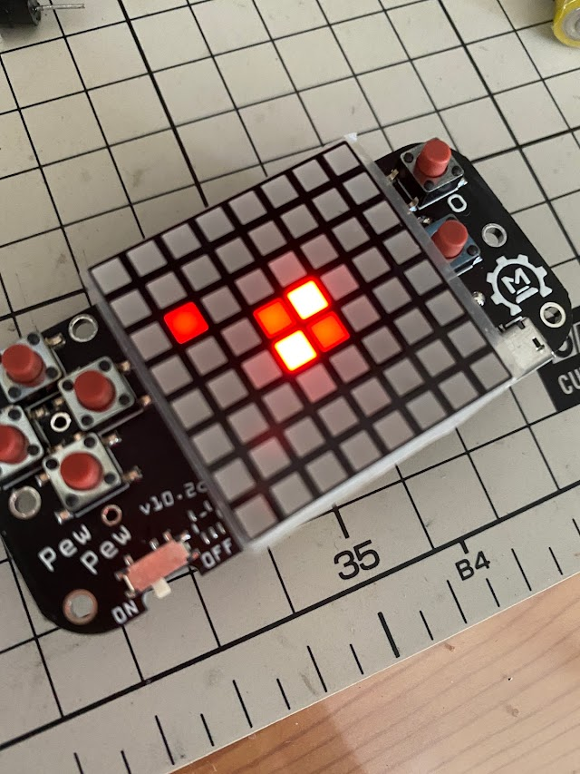
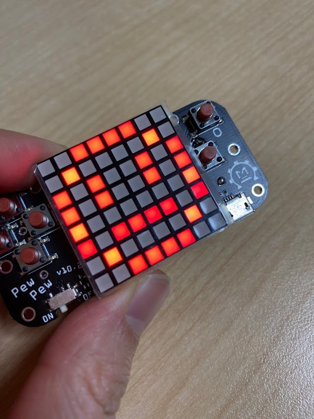
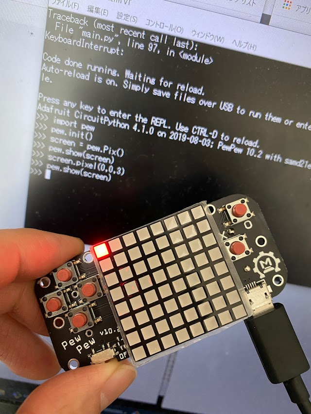
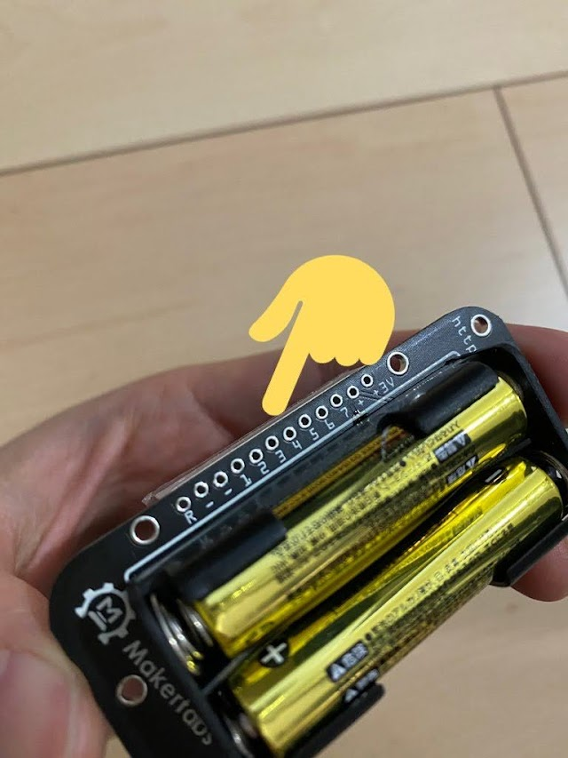

この記事はMakerfabsの提供でお届けします。
今回紹介するPewPew StandaloneはMakerfabsから提供いただいたものです。
（ですが、PewPew Standaloneをレビューしたい！と言ったのは自分なので、Makerfabsが無理やりこの商品を押しているわけではなく、inajobの一押しアイテム！、という感じです。）
PewPew Standaloneとは
PewPew Standaloneはオープンソースの携帯ゲーム機です。
ゲーム機と言っていますが、その性質は開発用プロトタイプボード、といった雰囲気のもので、この製品も基板むき出しで、ケースなどは付属していません。

仕様
- ATSAMD21
- 8x8 ドットマトリクス赤色LED
- Micro USB接続（データ専用）
- 単4電池x2 駆動
- 十字ボタン+2ボタン = 6ボタン
- 拡張端子
- オープンソースハードウェア
- 電源スイッチ
- M2と思われる固定用の穴（ケースは付属しません）
さらに細かい仕様は公式サイトを見てみてください。
遊んでみる
乾電池を入れて電源を入れると、初期ゲームが起動します。 ゲームランチャーが起動し、上下キーでいくつかのゲームを選んで起動することが出来ます。
- frog
- snake
- othello
乾電池が手元に無く、USBケーブルをつないで起動するか？と思いましたが、このゲーム機はこれでは起動しません。USBケーブルはデータ転送のみで電源は乾電池から得るという設計のようです。
もっというと、この基板上にはUSBからの5Vを3.3Vに降圧するためのレギュレータを搭載するためのフットプリントが存在しますが、実装されていません。確かにこれが無くても、乾電池さえ入れていればうまく動くので、「必要な人は取り付けてね」というスタンスなのでしょう。
ゲームを起動して気づくのは、単色のドットマトリクスLEDですが、階調表示を実現していることです。
ソースコードを見ると、どうやら4階調までサポートしているようですが、正直なところ消灯、中間、フルパワーの3段階がなんとか視認できるという程度で、あまり見やすいとは言えない表示方法のように見えました。
キーの入力も取りこぼしが多く、こちらもソースコードを見たところメインループの処理をゲームスピードに合わせて律速していると、キーのスキャンもそれに合わせて律速されてしまうようで、このせいで操作性が悪くなっているようでした。まぁ、この点はプログラムの書き方で改善できそうです。
パソコンとつないでみる（ゲーム開発編）
パソコンとつなげると、マスストレージデバイスとしてふるまい、普通のUSBメモリのように認識されてファイル一覧を見ることが出来ます。
これはCircuitPythonの仕組みを利用しているようです。
前項で遊んだゲームはmain.pyに記述されたランチャーから各ゲームのスクリプト呼び出すことで実現しています。
ゲームを開発するときは、ドライブ直下にcode.pyというファイルを作り、それを編集することで動作を検証することが出来ます。
保存するたびにゲームが再読み込みされるような動作をするため、スムーズに開発をすることが出来ます。
例えば以下のような内容のcode.pyを作って保存することで、画面に顔マークを横スクロールで表示できます。
import pew
pew.init()
face = pew.Pix.from_iter((
(0, 0, 3, 3, 3, 3, 0, 0),
(0, 3, 0, 0, 0, 0, 3, 0),
(3, 0, 3, 0, 0, 3, 0, 3),
(3, 0, 3, 0, 0, 3, 0, 3),
(3, 0, 0, 0, 0, 0, 0, 3),
(3, 0, 3, 3, 3, 3, 0, 3),
(0, 3, 0, 0, 0, 0, 3, 0),
(0, 0, 3, 3, 3, 3, 0, 0),
))
screen = pew.Pix()
count = 0
while True:
screen.box(0, 0, 0, 8, 8)
screen.blit(face, count % 9 - 9, 0)
screen.blit(face, count % 9, 0)
pew.show(screen)
count = count + 1
pew.tick(1/12)

PewPew Standalone完全に理解した pic.twitter.com/BPfo8AVq6b
— ina_ani@1歳9ヶ月児のパパ (@ina_ani) February 6, 2022
プログラムが完成したら、別名にリネームし、main.pyのランチャーに登録することで、他のゲームと同様に遊ぶことが出来ます。
code.pyを書き換えながらゲームを作るチュートリアルが公式ページにあります。
余談: USBのPID/VID
こういうUSB機器を見ると、ちょっと気になるのがUSBのPID/VIDです。
PewPew StandaloneのPID/VIDを見てみると、
- USB_VID = 0x239A
- USB_PID = 0x801D または 0x80D5（後者が正しいようです）
となっています。このVIDはAdafruitのもので、PIDもAdafruitが管理しているようです。（PIDが重複している話は、すでにIssueがあり、修正済みのようです ）
Adafruitとこのオープンソースハードウェアがどのような関係にあるかわからないですがCircuitPythonを使ったプロダクトという事で、PIDを発行してもらえたのかなと勝手に想像しています。
パソコンとつないでみる（REPL編）
CircuitPythonの特徴的な機能の一つにREPLがあります。
これは対話がシェルを通して、1行ずつPythonのコマンドを実行するモードです。
ちょっとした動作の確認をLinuxのシェルのコマンドを実行するかのように手軽に試すことが出来るのが特徴です。
ゲーム機をUSB端子でパソコンにつなげた状態で、適当なターミナルソフトウェアでシリアルポートに対して115200bpsでシリアル接続し、Ctrl+Cを打鍵すると、今動いているプログラムが強制終了されて、インタラクティブシェルが現れます。
ここで、Pythonのプログラムを書いていくことで、リアルタイムにゲーム機でプログラム片を実行することが出来ます。
例えば以下のような入力をすることで、左上の1つのLEDを点灯させることが出来ます。
>>> import pew
>>> pew.init()
>>> screen = new Pix()
>>> screen.pixel(0,0,3)
>>> pew.show(screen)

拡張端子
PewPew Standaloneには拡張端子も搭載されています。VCC,GNDが各2つと、8つのGPIOがスルーホールとして用意されています。
このスルーホールも工夫があって、よく見ると直線状ではなく1つ飛ばしで少しずれた配列となっています。
このように少しずれた穴のおかげで、ピンヘッダを単に押し込んだだけで、ピンヘッダとスルーホール穴が接触するため、はんだ付けなしで拡張端子を利用することが出来ます。
拡張端子をブレッドボードなどとつなげてセンサーをつなげたり、LEDストリップを取り付けたりと、好きなように拡張できます。

とにかくミニマム
回路図を見ると、部品点数が非常に少ないことがわかります。ATSAMD21を使った自作のガジェットを作る際の足掛かりとして参考になると感じました。
- ドットマトリクスLED
- CPU(ATSAMD21)
- マイクロUSBコネクタ
- 電池ホルダ
- タクトスイッチx6
- 電源スイッチ
たったこれだけの部品で構成されています。
異常な安さの秘密は、この部品点数の少なさにあるように思います。（それにしても安いですが・・）
感想
多くのインディーズゲーム機を見ていると、ATSAMD21と8x8単色のディスプレイというのは、CPUの性能の割に画面がしょぼすぎる気がします。 実際PewPew Standaloneの画面の表現力は非常に低く、これで動くゲームデザインを考えるのはなかなか大変だと感じました。 また、いくらミニマルといっても、スピーカーが無いのはゲーム機としてはちょっと扱いづらいです。
一方ATSAMD21で動くCircuitPytonの開発環境は非常に敷居が低く、組み込みプログラミングとは思えない手軽さでゲームを作ることが出来ます。
拡張端子も整備されており、任意の周辺機器を簡単に接続できることから、単なるゲーム機というよりは、気の利いたディスプレイの付いた安価なCircuitPython実行環境というのが、この商品を的確に表す説明かなと思いました。
個人的には、ATSAMD21と128x64 OLEDの組み合わせくらいが丁度良いのでは？と思っています、PewPew Standaloneの拡張端子を使えば、簡単に試作が出来そうなので、試してみようと思っています。
購入はこちら
PewPew Standaloneはオープンソースハードウェアですが、組み立て済みの製品をMakerfabsで購入することが出来ます。
しかもお値段なんと・・$9.9（送料別）。これはもう買って積んでおいても全く心が痛まない価格です。
他にもMakerfabsでは魅力的なガジェットや、電子部品をたくさん扱っているので、何かを買うついでに買うというのも良いと思います。


関連記事